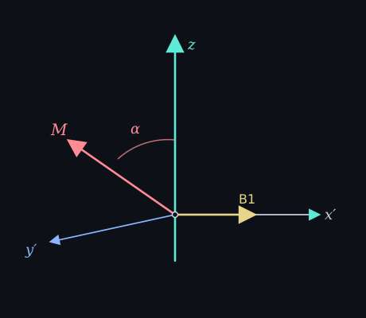

Continuing from Larmor precession: how do we move the equilibrium magnetization away from B0 and obtain a signal?
At thermal equilibrium, M points along B0, which we take as the z-axis, and there is no net transverse magnetization. An RF pulse tips M away from z so that it has a component in the xy plane. Here, B1 denotes the effective transverse RF component rotating in the same sense as the nuclear precession; matching the Larmor frequency ω₀ produces resonance. The swing analogy helps with the frequency matching, but does not fully describe the spin dynamics.
In a frame rotating at the resonant frequency, the effective longitudinal term is zero and B1 appears stationary. The physical B0 has not disappeared: its effect on the precession is canceled by the change of reference frame. M then rotates around B1. For an on-resonance, constant-amplitude pulse of duration t_p, neglecting relaxation during the pulse:
α = γ B1 t_p

The flip angle α is in radians in this equation. Starting from M along +z, a 90° pulse tips it into xy and a 180° pulse inverts it to −z. Once the RF is switched off, transverse magnetization continues to precess in the laboratory frame; it has not been parked motionless in xy. MIT: RF excitation, pp. 5–6.
For an amplitude-shaped pulse with fixed RF phase, the on-resonance result depends on the pulse area: α = γ ∫ B1(t) dt. A longer pulse and a stronger pulse can therefore give the same flip angle under these assumptions. This is why both pulse amplitude and duration matter, rather than the scanner controlling α independently of B1.
Off-resonance, an effective longitudinal component remains, so M rotates around a tilted effective field rather than around B1 alone. The rotation axis and final magnetization both change; the result cannot be summarized as every off-resonance pulse simply giving a smaller flip. MIT: rotating-frame effective field, pp. 5–6.
The receiver detects the rotating transverse component through electromagnetic induction, rather than directly measuring Mz. A gradient can make resonance frequency depend on position, allowing an RF pulse to excite a selected slice. That spatial-selection step is the connection to later imaging notes. MIT: MR principles.
Next note: T1 and T2 relaxation.
中文
接續拉莫爾進動：要怎麼把平衡狀態的磁化向量移離 B0，得到可偵測的訊號？
在熱平衡時，M 沿著 B0，也就是這裡設定的 z 軸，整體橫向磁化為零；RF pulse（射頻脈衝）會把 M 翻離 z 軸，建立 xy 平面內的分量。這裡的 B1 指與核進動同向旋轉的有效橫向 RF 分量，頻率對上拉莫爾頻率 ω₀ 時便產生共振；盪鞦韆的比喻可以幫助理解頻率匹配，但不能完全代替自旋動力學。
在以共振頻率旋轉的座標系中，有效磁場的縱向項為零，B1 則看起來是靜止的；這並不是實際的 B0 消失，而是座標轉換抵消了它造成的進動，此時 M 會繞著 B1 旋轉。若 pulse 位於共振上、振幅固定、持續時間為 t_p，且忽略脈衝期間的弛緩：
α = γ B1 t_p
這個公式裡的 α 以弧度表示。以 M 原本沿著 +z 為前提，90° pulse 會把它翻到 xy 平面，180° pulse 則使它反向到 −z；RF 關掉後，橫向磁化在實驗室座標中仍會繼續進動，並不是靜止地停在 xy 平面。MIT：RF 激發，第 5–6 頁。
若 pulse 的振幅隨時間改變，但 RF 相位固定，在相同共振假設下，翻轉角取決於脈衝面積：α = γ ∫ B1(t) dt。因此，較長的 pulse 與較強的 pulse 可能產生相同翻轉角，振幅與持續時間都需要一起看，並不是掃描器能獨立於 B1 直接指定 α。
偏離共振時，有效磁場會留下縱向分量，M 便繞著傾斜的有效磁場旋轉，而不再只繞 B1；旋轉軸與最後的磁化狀態都會改變，不能一律簡化成翻轉角只會變小。MIT：旋轉座標中的有效磁場，第 5–6 頁。
接收線圈透過電磁感應偵測旋轉的橫向分量，而不是直接量 Mz。若加入梯度，讓共振頻率隨位置改變，就能配合 RF pulse 選擇激發某一切層，這也接到後續的空間定位與成像。MIT：磁共振基本原理。
下一則：T1 和 T2 弛緩。